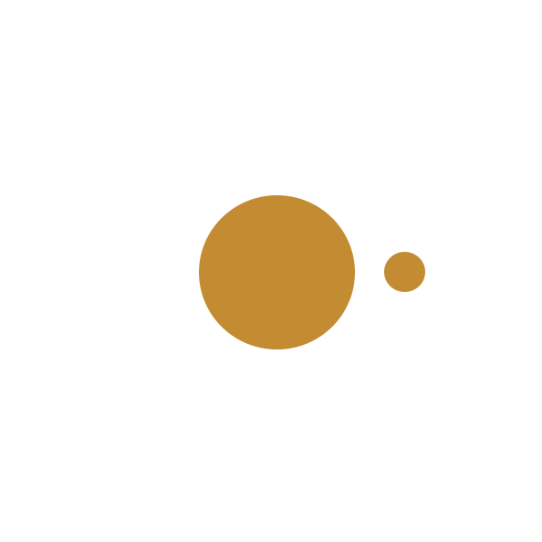

EnEs

At McClatchy we found that as our product portfolio increased so did the amount of styles and design patterns we were using. We noticed that we had accumulated a lot of duplicate and slightly different styles on our sites. Also, some styling was starting to become a little inconsistent.En McClatchy nos dimos cuenta que mientras nuestro portafolio de productos crecía también creció la cantidad de estilos y patrones de diseño que usamos. Notamos que habíamos acumulado muchas variaciones innecesarias de estilos similares. También partes de nuestros diseños se estaban volviendo inconsistentes.
We saw the need to clean up our styles and create a clear set of guidelines of how to use each style in the appropriate situation. These guidelines needed to be intuitive for any designer on our team to use or for development teams to clearly see how they should be built and implemented.Vimos la necesidad de limpiar nuestros estilos y crear una guía clara de cómo utilizar cada estilo en la situación apropiada. Esta guía tenía que ser intuitiva para enseñar cualquier diseñador o desarrollador como usar o implementar el estilo.
We discovered the philosophies of Atomic Design and decided to use it's principles to build our company style guide.Descubrimos las filosofías del Diseño Atómico y decidimos usar sus principios para formar nuestra propia guía de estilos de compañía.
We started building our atomic style guide with one fairly new product that was growing fast in size, scope, and business importance: our digital subscriptions platform. First, we took an inventory of all the styles we were using on all pages and identified the similar styles and elements. We broke down and organized the elements to the smallest level where there was a repeatable pattern. Finally, we had to make some choices as to which styles to keep, combine, or discard.Empezamos edificando nuestra guía de estilos atómicos con uno de nuestros productos nuevos que estaba creciendo en importancia de nuestros negocios: nuestro plataforma de suscripciones digitales. Primero tomamos inventario de todos los estilos que usamos en este plataforma e identificamos los estilos y elementos similares. Identificamos y organizamos los elementos a su nivel más pequeño pero repetible. Finalmente decidimos cuales estilos guardar, combinar o eliminar.
Once we had our final streamlined set of styles chosen, defined, and named, we recorded everything in a style guide we decided to build using Frontify. In Frontify we created a UI library to store our style guide organized by atoms (smallest repeatable style element), molecules (elements composed of multiple atoms), and organisms (elements composed of multiple molecules).Cuando ya unificamos, optimizamos, definimos y nombramos todos los estilos recopilamos todo en una guía de estilos que decidimos hacer usando Frontify. En Frontify creamos una biblioteca de UI para almacenar nuestra guía de estilos organizados por átomos (elementos de estilo más pequeño que todavía son repetibles), moléculas (elementos compuestos de varios átomos), y organismos (elementos compuestos de varias moléculas).
Each UI element in our style guide contained a visual representation of the style as well as the HTML, CSS, and jQuery to build it. We then shared this with the developers and used it as a point of reference whenever we made new mockups so it would be easier to keep everyone on the same page on the elements involved.Cada elemento de UI en nuestra guía de estilos contenía una representación visual del estilo como también el HTML, CSS y jQuery para crearlo. Entonces compartimos esta guía con los desarrolladores y lo usamos como punto de referencia cuando hicimos nuevas maquetas para que así todos estaríamos en la misma página de los elementos envueltos.
We're gradually expanding this style guide to encompass styles for all products across the company.Gradualmente estamos ampliando esta guía de estilos para abarcar los estilos de todos nuestros productos de la compañía.
We didn't realize how many duplicate and one-off styles were live in production until we went through this exercise. After we completed the first cycle of this process we noted how much easier it was to create new designs and keep things consistent.No nos dimos cuenta de cuantas variaciones innecesarias de estilos estaban en vivo en el ambiente de producción hasta que hicimos este ejercicio. Después de completar el primer ciclo de este proceso notamos que era más fácil producir nuevos diseños consistentes.
We were also pleasantly surprised on how our relationships with the developers improved, as we all had a better understanding and expectation of what we were asking to build and what the final outcome would be.También quedamos sorprendidos pero contentos como nuestra relación con los desarrolladores aún mejoró porque todos tuvimos una mejor comprensión y expectativa de lo que esperamos edificar y los resultados finales.